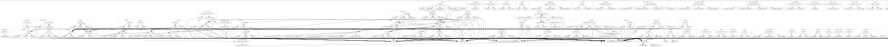
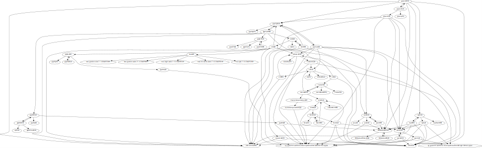

Se tienen muchas aplicaciones en un servidor de aplicaciones wildfly bastante viejo. Se desea evaluar la posibilidad de pasar a utilizar un servidor más reciente, pero separando las aplicaciones y no deployandolas todas juntas nuevamente.
Parte del problema (aparte de la migración), es que los artefactos existentes fueron construidos con ant en lugar de maven y no se tiene información de las dependencias entre aplicaciones jee y son muchas.
Un enfoque para intentar determinar la dependencia entre aplicaciones es dibujar
con graphviz un grafo obteniendo la información de los archivos de
configuración xml que se encuentran en los artefactos (ej. application.xml,
ejb-jar.xml, jboss.xml) mediante el uso de xmllint con expresiones
xpath.
Para extraer los archivos se utiliza el script unpack-apps.sh que descomprime los artefactos recursivamente:
- se comienza a descomprimir los archivos ear
- luego se descomprimen los archivos war
- se escanean los archivos jar para determinar mediante una heurística si estos deben descomprimirse o no; esto continúa hasta que no queden archivos que se considere que deben descomprimirse
- por último se convierten todos los archivos de configuración al formato de archivo unix para asegurarse que en etapas posteriores de procesamiento no habrá problemas
Aquí vale la pena notar que la heurística utilizada para saber si hay que
descomprimir o no un jar es si algún archivo concuerda con /mycompany/ o
mycompany/ (hay una clase o recurso bajo el paquete mycompany).
Una vez que se tienen los archivos de configuración se utiliza el script create-graph.sh el cual extrae de los archivos:
- application.xml
- ejb-jar.xml
- jboss.xml
informción utilizando xmllint y a partir de ella genera un archivo .dot que
contendrá el grafo de dependencias entre las aplicaciones.
Para tener una idea de como se ve el grafo utilizando xdot: 
Esto es bastante intratable, independientemente de la utilidad de la información.
Una alternativa es utilizar gvpr para obtener las dependencias a partir de un artefacto dado (nodo del grafo). Esto lo podemos hacer utilizando el script prune-graph.sh utilizando como parámetro uno de los nodos del grafo.
Un ejemplo de como se ve el grafo: .